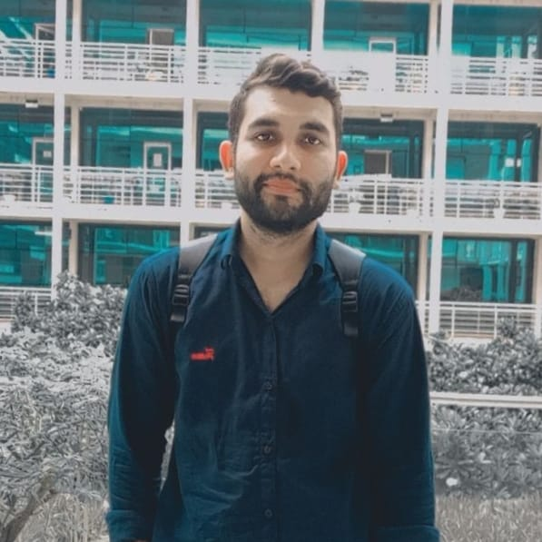

About Me

Hi, I’m Altamash Ahmad, a passionate and enthusiastic undergraduate web developer currently pursuing my B.Tech in Computer Science. I have a strong foundation in web development and enjoy building responsive, user-friendly websites and applications. My journey in tech started with learning the basics of HTML, CSS, and JavaScript, and I’ve since expanded my skills to work with modern technologies like React, Node.js, and MongoDB.
I love tackling challenges, learning new tools, and constantly improving my development skills. I am always eager to explore new projects that allow me to enhance both my front-end and back-end abilities.
Whether it’s creating dynamic websites, optimizing user experience, or contributing to open-source projects, I’m committed to building solutions that are both visually appealing and technically sound.
I love tackling challenges, learning new tools, and constantly improving my development skills. I am always eager to explore new projects that allow me to enhance both my front-end and back-end abilities.
Whether it’s creating dynamic websites, optimizing user experience, or contributing to open-source projects, I’m committed to building solutions that are both visually appealing and technically sound.